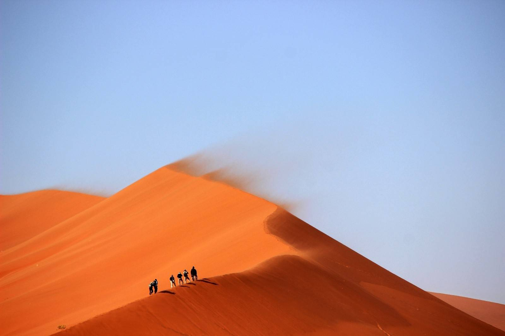

Ce se află sub nisipul din desertul Sahara?
 Skip to content Toggle navigation Actual Curiozitati Locuri Stiinta&Tehnica Despre noi Despre noi Cookies Politica de confidentialitate ContactCe se află sub nisipul din deșertul Sahara?
Posted on aug. 11, 2020 by A. P. in Curiozitati , Stiinta&Tehnica and tagged desertul SaharaAtunci când oamenii menționează conceptul de „deșert” se gândesc la dunele de nisip ondulate ale deșertului Sahara, cu o vedere panoramică a acestora într-o continuă curgere.
Majoritatea deșerturilor sunt caracterizate de căldură, dar există, de asemenea, deșerturi cu climă rece, cum ar fi deșertul Gobi sau Antarctica.
De fapt , majoritatea deșerturilor de pe Pământ nu sunt acoperite cu nisip, ci de roci care depind în principal de terenul din jur, de structura geologică și de modelul climatic.
De unde vine nisipul din Sahara?
Deși deșerturile nu sunt acoperite complet de nisip, întrebarea este de unde a venit nisipul? Ei bine, schimbările rapide ale temperaturii între zi și noapte afectează structura rocilor dintr-o anumită zonă, determinându-le să crape și să se spargă.
În combinația cu aerul uscat și fierbinte să apară eroziunea este ușor. O mare cantitate de nisip se va forma în mii de ani. Nisipul este clasificat practic în funcție de diametrul particulelor.
Nisipul din partea de jos a deșertului are un diametru mai mare și este mai greu. La suprafața deșertului este nisip fin și cu diametru mic, care se adună de regulă în dune.
Ce este sub nisip?
Aproximativ 85% din suprafața unui deșert nu este acoperită de nisip, ci cu pământ expus sub un strat de argilă roșie crăpată. Nu există vegetație, astfel încât solul este erodat de vânt și nisip.
Tipul , culoarea și duritatea rocilor de pe suprafața deșertului depind de caracteristicile geologice ale zonei. În plus, pe măsură ce deșertul continuă să „crească”, stratul de nisip nu se extinde treptat spre exterior, ci ecosistemul deșertului (începând cu suprafața până la rocile din interior) este treptat erodat.
Îți place articolul? Distribuie-l prietenilor tăi!
Facebook TwitterArticole asemănătoare:
Care este grosimea stratului de nisip din deșert? Cum arată nisipul mărit de 300 de ori la microscop Locul unde Deșertul Namib întâlnește Oceanul Atlantic Turnul de vânt. "Aerul condiționat" de acum 3000 de ani De ce nu se construiesc centrale solare în Sahara? Ciao Bella! Top 7 cele mai frumoase plaje din Italia De ce în Africa cerul este atât de înstelat? Care este diferența dintre ciment și beton? 7 Mituri False despre animale Ce se întâmplă dacă miezul Pământului se răcește?Navigare în articole
Previous Article Next Article
Urmărește-ne pe Facebook!
FacebookCitește în continuare
Unde vor trăi oamenii dacă toată gheața de pe planetă se topește Floarea care se aseamănă cu o pasăre colibri Este adevărat că orașul Las Vegas a fost fondat de mafioți? Turnul de vânt. "Aerul condiționat" de acum 3000 de ani Omul care a inventat vacanța la mare (înainte de el, nu exista acest obicei) Cum arată nisipul mărit de 300 de ori la microscop De ce a dispărut viața de pe Venus Focul Viu de la Andreiaşu, locul unde oamenii află înainte cutremurele Dacă apa și săpunul elimină murdăria, de ce prosoapele se murdăresc? NASA va trimite o sondă pe cel mai valoros asteroid din istorie Locul unde Deșertul Namib întâlnește Oceanul Atlantic De ce avioanele nu zboară la o altitudine mai mare de 11.000 de metri © 2020 Atlas Geografic. Drepturile conținutului sunt rezervate și protejate de Legea 8/1996. error:Acest site folosește cookie-uri. Continuând navigarea pe site, vă exprimați acordul pentru folosirea lor citeste mai mult Am înțeles
The cookie settings on this website are set to "allow cookies" to give you the best browsing experience possible. If you continue to use this website without changing your cookie settings or you click "Accept" below then you are consenting to this.
Close